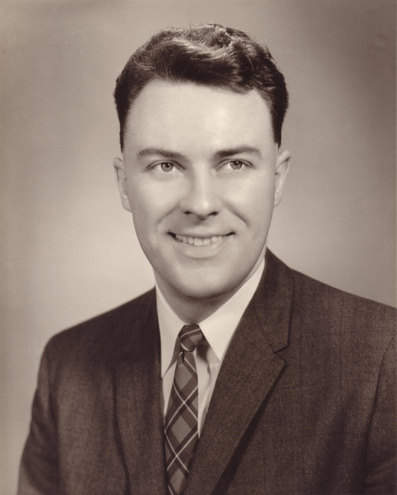

Academics
Dad excelled at academics right from an early age.
- He skipped a grade, and was an avid reader, reading every book in the library. I often said he was a "walking encyclopedia", being well versed in every subject and finding a common interest with almost anyone.
- Also, he had a passion for music. He studied the piano for many years, and even sometimes performed at functions. His mother was a piano teacher and performer.
- He earned his Bachelor of Science at the University of Alberta with the highest grades in the faculty.

- Afterwards he moved to Boston to pursue his PhD in mathematics at MIT, Massachusetts Institute of Technology.
 - While at MIT, my Dad had many amazing experiences where he:
- attended a lecture on the Theory of Relativity by the Sir Albert Einstein himself.
- went on double dates with the Nobel Prize winning mathematician, John Forbes Nash (portrayed in the movie A Beautiful Mind).
- attended many historical speeches, including one by Martin Luther King.
- After earning his PhD at MIT, he returned to his educational roots and accepted a professorship back home at the University of Alberta, where he taught for about 30 years until retirement.
- Incidentally, he was the head professor when I was taking my Differential Equations courses in Electrical Engineering at the UofA. We both agreed it would be less stressful if I selected a section with a different professor. Although, he did mark a third of the questions on my exams, since they were a collective effort across the professors.
- MIT 50th Reunion in Boston